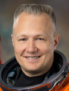

Lyndon B. Johnson Space Center
Houston, Texas 77058
|
National Aeronautics
and Space Administration Lyndon B. Johnson Space Center Houston, Texas 77058 |
 |
Biographical Data |
||
Douglas G. Hurley (COLONEL, U.S. Marine
Corps, Retired)
NASA Astronaut
PERSONAL DATA: Born on October 21, 1966, in Endicott, New York, but considers Apalachin, New York, his hometown. He is married with one child. Recreational interests include hunting, cycling and attending as many NASCAR races as possible.
EDUCATION: Graduated from Owego Free Academy, in Owego, New York, 1984. Bachelor of Science in Civil Engineering, Tulane University, Louisiana, 1988.
SPECIAL HONORS: Magna Cum Laude with Honors, Tulane University; Distinguished Graduate, U.S. Marine Corps Officer Candidates School; Distinguished Graduate, Tulane University NROTC; Distinguished Graduate, U.S. Navy Pilot Training. Stephen A. Hazelrigg Memorial Award for best Test Pilot/Engineer Team, Naval Strike Aircraft Test Squadron. Awarded the Legion of Merit, the Defense Superior Service Medal, the Defense Meritorious Service Medal, the Meritorious Service Medal, two Navy and Marine Corps Commendation Medals and various other service awards.
EXPERIENCE: Hurley received his commission as a Second Lieutenant in the United States Marine Corps from the Naval Reserve Officer Training Corps at Tulane University, New Orleans, Louisiana, in 1988. After graduation, he attended The Basic School (TBS) in Quantico, Virginia, and later, the Infantry Officers Course. Following Aviation Indoctrination in Pensacola, Florida, he entered flight training in Texas in 1989 and was designated a Naval Aviator in August 1991. He then reported to Marine Fighter/Attack Training Squadron 101 at Marine Corps Air Station El Toro, California, for initial F/A-18 training. Upon completion of training, he was assigned to Marine All Weather Fighter/Attack Squadron 225, where he made three overseas deployments to the Western Pacific. While assigned to VMFA (AW)-225, he attended the United States Marine Aviation Weapons and Tactics Instructor (WTI) Course, the Marine Division Tactics Course (MDTC) and the Aviation Safety Officers Course at the Naval Postgraduate School in Monterrey, California. Over his 4 1/2 years with the “Vikings,” he served as the Aviation Safety Officer and the Pilot Training Officer. Hurley was then selected to attend the United States Naval Test Pilot School at Naval Air Station Patuxent River, Maryland, and began the course in January 1997. After graduation in December 1997, he was assigned to the Naval Strike Aircraft Test Squadron (VX-23) as an F/A-18 Project Officer and Test Pilot. At “Strike,” he participated in a variety of flight testing, including flying qualities, ordnance separation and systems testing and became the first Marine pilot to fly the F/A-18 E/F Super Hornet. He was serving as the Operations Officer when selected for the astronaut program. He retired from the United States Marine Corps in September, 2012, after more than 24 years of service.
Hurley has logged over 4,500 hours in more than 25 aircraft.
NASA EXPERIENCE: Selected as a pilot by NASA in July 2000, Hurley reported for training in August 2000. Following the completion of 2 years of training and evaluation, he was assigned technical duties in the Astronaut Office, which have included Kennedy Operations Support as a “Cape Crusader,” where he was the lead Astronaut Support Personnel (ASP) for shuttle missions STS-107 and STS-121. He worked Shuttle Landing and Rollout, served on the Columbia Reconstruction Team at Kennedy Space Center and in the Exploration Branch in support of the selection of the Orion Multi-Purpose Crew Vehicle (MPCV). He also served as the NASA Director of Operations at the Gagarin Cosmonaut Training Center (GCTC) in Star City, Russia. In July 2009, Colonel Hurley completed his first spaceflight as pilot on STS-127, International Space Station Assembly Mission 2J/A. Following that mission, Hurley served as the Astronaut Office Safety Branch Chief. In July 2011, he completed his second spaceflight as pilot on STS-135, International Space Station Mission ULF7. He has accumulated more than 683 hours in space and currently serves as the Assistant Director, New Programs, for the Flight Crew Operations Directorate (FCOD) at Johnson Space Center.
SPACEFLIGHT EXPERIENCE: STS-127, International Space Station Assembly Mission 2J/A, Endeavour (July 15 to July 31, 2009) delivered the Japanese-built Exposed Facility (JEM-EF) and the Experiment Logistics Module Exposed Section (ELM-ES) to the space station. The crew completed the construction of the KIBO Japanese Experiment Module, installed scientific experiments on its Exposed Facility and delivered critical spare parts and replacement batteries to the orbital complex in addition to transferring 24,638 pounds of hardware and 1,225 pounds of water to the station. While the shuttle was docked, the mission featured a record 13 astronauts working aboard the space station, representing all five International Partners: NASA, the Russian Space Agency, the Canadian Space Agency (CSA), the European Space Agency (ESA) and the Japanese Space Agency (JAXA). The 16-day mission included five spacewalks and was accomplished in 248 orbits of the Earth, traveling 6,547,853 miles in 15 days, 16 hours, 44 minutes and 58 seconds.
STS-135/ULF7, Atlantis (July 8 to July 21, 2011) carried the “Raffaello” Multi-Purpose Logistics Module (MPLM) to deliver supplies, logistics and spare parts to the International Space Station. The mission also flew a system to investigate the potential for robotically refueling existing spacecraft and returned a failed ammonia pump module to help NASA better understand the failure mechanism and improve pump designs for future systems. STS-135 was the 33rd flight of Atlantis, the 37th shuttle mission to the space station and the 135th and final mission of NASA’s Space Shuttle Program. The mission, which included one spacewalk by Expedition 28’s Mike Fossum and Ron Garan, was accomplished in 200 orbits of the Earth, traveling 5,284,862 miles in 12 days, 18 hours, 27 minutes and 56 seconds.
JUNE 2013